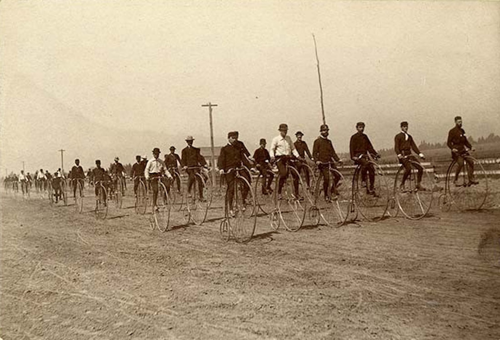
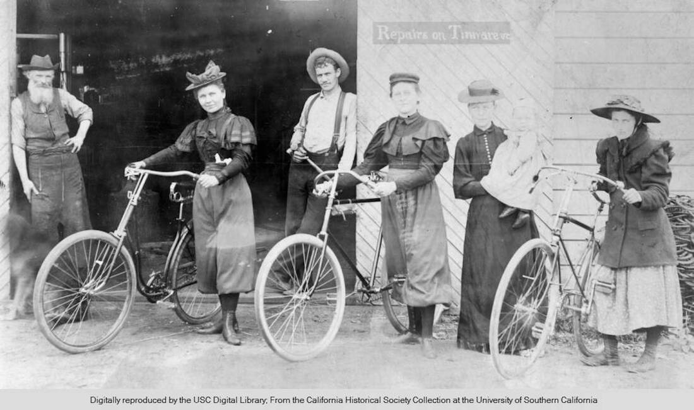
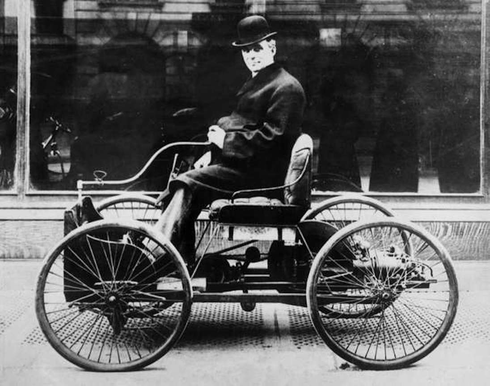

Bikers Become Outlaws:
the Healdsburg Wheelmen
Note: an earlier version of this article appeared in the Russian River Recorder,
Healdsburg Historical Society, Spring 1987, issue 32
Healdsburg Historical Society, Spring 1987, issue 32
|
It may be difficult to imagine in an era of sleek sports cars and stomach-churning rocket rides just how racy the bicycle seemed in the 1890s. By 1899 there were 312 bicycle factories in the United States selling one million bicycles a year. Suddenly, so many people were spending their disposable income on bicycles that other entertainment manufacturers like piano makers experienced a severe slump in sales. Daring young men and women (some of whom wore scandalous "bloomers"), middle aged folks, and just about anyone who could reach the pedals, wanted a bicycle, or a "Velocipede" as they were sometimes known.
The first commercially successful American brand name bicycle was the Columbia, manufactured by Colonel Albert A. Pope from about 1878 on. The Columbia looked much like the bicycle as we now know it, and incorporated the ball bearing and coaster brake. Another cycling innovation at this time was the "highwheeler" (called a Penny Farthing in England), a bicycle with a larger front wheel (up to 5' high) that went at faster speeds. But it might have been nicknamed the "bone breaker" for the rider's tendency to fall from such a height. Gradually further innovations, such as the addition of sprockets and solid rubber wheels, brought about the "safety bicycle", which most people rode by 1890. The wild popularity of cycling actually brought about a great deal of national road improvements that later benefited the automobile. That cycling craze faded only when it was replaced by the new car craze beginning about 1900.(1)  A herd of highwheelers (known as Penny Farthings in England) navigate San Leandro Road on the way to Milpitas, circa 1886.(California Historical Society)
Throughout the 1880s, more and more individual cyclists purchased "road machines" and it was only a matter of time before these enthusiasts found each other. In the late '80s cycling groups formed in most big cities throughout California. The largest group in the San Francisco Bay Area was the glamorous and intrepid Bay City Wheelmen, who apparently made their first journey through Healdsburg in late May 1890. Only the year before Santa Rosa cyclers formed their own Rose City Wheelman.(2)
The national parent organization, the League of American Wheelmen, had been around since 1881, and right away began agitating for better American roadways. The parent club also founded the "Century Ride" (50 miles going, 50 miles back). The first bicycles in Healdsburg were either homemade or ordered through local retail outlets, usually hardware stores. An informal group of Healdsburg bicycle enthusiasts began to take rides in the vicinity by 1892. These trips were thought to be newsworthy in the extreme and almost every detail was faithfully reported in the local papers, including routes and start and finish times. One of the first Healdsburg rides fell on St. Patrick’s Day 1892, and it was doozy: On Sunday a party of wheelmen, consisting of Horace Nichols, Rainey Haigh, Carl Foreman, Walter Piatt and Frank Philips left Healdsburg for a trip to the Geysers and return. The start was made at 6:30 a.m. At Geyserville a short stop was made. Arrived at Cloverdale at 9.05 a.m., breakfasted at Mr. Minnehau’s and left for the Geysers at 9:30 a.m. Arrived at the Geysers at 4 p.m., having had a bad road all the way; dined at Mr. Crawford’s three miles from the Geysers. Left the Geysers at 4 :30 p.m., arrived at Mr. Day’s at Pine Flat at 7:30 p.m. Left the Flat at 8 p.m., and unfortunately took the Calistoga instead of the Sausal Creek road. Arrived at Soda Rock House in Alexander Valley at 12:26 a.m. Left Soda Rock at 12:30 a.m., and arrived at Healdsburg at 1:30 a.m., having ridden the eight miles from Soda Hock in one hour. The total distance traveled was sixty-five miles; time on the trip nineteen hours; distance rode, thirty miles; distance walked, thirty-five miles. No serious accidents, but several narrow escapes from riding through the air into the Sulphur and MacDonald creeks. Had a good time and a hard trip. Try it.(3) The Healdsburg group appeared to meet regularly and competition in speed and distance was a major focus. A few riders took another epic ride four months later: Healdsburg Wheelmen Abroad. Last Thursday Rainey Haigh, Carl Foreman and Harry Cummings started on a long journey on their bicycles. They arrived at St. Helena the first day, making Vallejo the second day, stopping at the different places while traveling through the beautiful valley of Napa. Rainey speaks high in praise of the City of Napa and its surroundings. While there he had a “go” with the champion bicyclist of that burg, and as usual won, “hands down.” The third day brought the party to the Bay City, [San Francisco] where they report having had a good time. On Sunday San Jose was reached. The boys covered this distance, which is sixty miles, in five hours. The route from San Jose will be Santa Cruz, Monterey, Del Monte, Pacific Grove and all towns of any note whatever in this “watering” place section of the State. Everything so far has run smoothly, barring dust, heat and several other inconveniences which bicyclists have to expect upon trips of this character.(4) By 1893 the Tribune editor Louis Meyer, son of pioneer Jewish merchant Sam Meyer, began to coax the Healdsburg cycle "boys" to form an official club of their own. His thinking was that they could put on tournaments that would draw visitors and new residents. When Victor Hancock of San Francisco showed up in Healdsburg in May, astride his "Rambler wheel" , to scout out good locations for his cycling guidebook through Northern California, he added his voice to urge upon the wheelmen of this city the advantage of forming a club and of joining the league association before the book. By September local cycle champs Rainey Haigh and Ernest Baker were holding races on West Street.(5)
At the start of cycling season 1894 young Meyer noted, The bicycle craze is becoming more vehement in Healdsburg than ever. There are nearly double the number of wheelmen here now than there were last year. And growing impatient, he reported a full year later: The organization of a bicycle club in this city has been talked of among the most interested cyclers, but thus far it is in a state of uncertainty. A club of this sort would give much recreation to the wheelmen and the pastime would quickly become refreshed.(6) Finally cajoled into taking the plunge, the local biking gang joined the League, officially donning the title "Healdsburg Wheelmen" on April 10, 1895. Some of the founding members were Ben H. Barnes, W. R. Haigh, J. E. Ewing, A. W. Garrett, (owner of the hardware store that sold bicycles), J. D. Hassett, J. B. McCutchan, and J. J. Livernash, (editor of the Healdsburg Enterprise newspaper).(7) 
The Healdsburg Wheelmen, September 22, 1895, outside the Healdsburg Tribune office and Sam Meyers Store on West St. (Sonoma County Library copy of original at the Healdsburg Museum)
The Wheelman Meets
The first Healdsburg Wheelmen meet, held at the old Matheson Field on August 11, 1895, caused great excitement locally. An estimated crowd of 500 turned out to watch the strictly amateur cyclers avoid ruts and chuckholes on the track during eight breathtaking races. Local boy, Harvey Fuller, carried the day, winning the 1/8 mile, 1/4 mile, and 1/2 mile dashes, the last in one minute 25 and 4/5 seconds. Ellis Decker, a "Healdsburg crackerjack", was too fast to race, but did an exhibition half mile in an astonishing 1 minute 6 and 4/5 seconds. The only sour note came when Lou Goldman was accused of deliberately throwing his race with Quim Sewell because he bet heavily against himself before the race.(8) The second Wheelmen meet, on September 8, 1985, drew 1,000 spectators. Not all of the races were speed matches. The "slow race" was won by the last man over the finish line, and was meant to show grace, agility, and control. Even the speed races were friendly, as older cyclers were often given handicaps of a few hundred yards head start. Some of the "crackerjacks" were disqualified by the League as "professionals". Every attempt was made, it seems, to make the meets more a social than a competitive sporting event, although thrilled spectators witnessed several spectacular falls by determined racers.(9) Perhaps needing a break from these competitions, the Healdsburg Wheelman made a group run to Mark West on Sunday, September 19, gorging themselves in a watermelon patch before heading on to Santa Rosa or home by way of Windsor. The next Sunday they cycled to Skaggs Spring.(10) The third, and apparently final, Wheelmen Meet came on September 29, 1895. Frank Byne from San Jose, the Pacific Coast Speed Record Holder for the 1/2 mile (1:01 time), was on hand to observe. The prize for the most graceful rider that day went to Jack Haigh, but he had stiff competition from male riders who came dressed as women or in comical costumes. The Healdsburg Wheelmen set a local record that day for the mile run at 1 minute 10 and 3/4 seconds. (The minute mile was finally broken by "Mile a Minute Murphy" who rode behind a Long Island Railroad train in 1899. He did the mile in 57 4/5 seconds). The Tribune declared that the Healdsburg cyclers...manifest a spirit of enthusiasm which those cities [Santa Rosa and Petaluma] have yet to show. Significantly, the hometown newspaper did not claim riding superiority.(11) We Don’t Care a Rap
That Healdsburg "spirit of enthusiasm" may be what led the club into controversy later that same month. Seemingly reluctant to join in the first place, Healdsburg Wheelmen Charles Beard, Quim Sewell, Will Barnes, Harvey Fuller, Deventhal and others were suspended by the League of American Wheelmen suspended for taking part in the unsanctioned Healdsburg races. In response the spokesman for the defiant club told the press, We don't care a rap...and we will henceforth disregard and ignore entirely the dictations of the League. The local press stood behind their Wheelmen, branding the League, a despotic and imperious combination.(12) The outlaw Healdsburg Wheelmen chapter stayed together and apparently took another daring step by fraternizing with Wheelwomen. In October 1895 the Tribune remarked, The evenings now are bright and warm and the wheelmen and bloomer girls do not throw away the opportunity of enjoying pleasant cycling. In December they held a Masquerade Ball to raise money to maintain their race track at Matheson (or Luce) Field. In the spring of 1896 they entertained the Santa Rosa Wheelmen. The trip down the old dirt road to dinner at the Occidental Hotel was leisurely, as several "bloomer girls" were part of the convoy. At the same time the Imperial Bikers of San Francisco were also guests of the Santa Rosans.(13)  Healdsburg had fetching "bloomer girls" like the ones shown here in Monrovia in 1887.
End of the Craze
In 1896 the papers reported on a growing problem with the County Tax Assessor’s efforts to collect his due on the new recreational machines: It seems that the wheelmen have been pretty successful in dodging the Assessor in his rounds. Only about forty or fifty bicycles are found on the assessment roll of the city of Petaluma, while there are no doubt at least five limes that many owned by persons living in the city limits. On the county assessment roll, there are only about 201 bicycles, so it will be seen that the tax on wheels is not very thoroughly collected in other places. In all the counties of the State, only 6000 bicycles are assessed. The board of equalization is keeping a lookout for bicycle owners and every day a few more names are added to the roll on this account. It is only a small tax and the wheelmen should understand that if they do not “hide” their machines, their voice on behalf of better streets and roads will have more effect with the governing bodies.(14) Things were probably winding down for the bicycle craze when the Healdsburg Wheelmen objected to another 1896 League Rule: no racing on Sundays! That cut into the style of the local men, many of whom labored all week and Saturdays too, at their stores or on their farms.(15) Finally fed up with League rules, the next year local cyclers tried to regroup under the name Healdsburg Cyclers, with a proposed emblem of a fig leaf with "H C" embroidered over it. They held one exciting race about town on Sunday, August 1, 1897, and that’s the last I can find of our rebel peddlers as an organized group. Always looking ahead, editor Meyer noted: It is perhaps just as well that the Healdsburg Wheelmen have abandoned their race course and disbanded since it is announced by a California Ananias that airships will soon become a popular conveyance and sell for a hundred dollars apiece. We can then have racing in the atmosphere and it will not be a perpetual expense to the sporting gentlemen to keep the course in the proper repair.(16) The honeymoon phase of Healdsburg's fascination with its intrepid bikers came in 1900, when a City Ordinance was enacted prohibiting wheelmen from riding on the sidewalks.(17) It is likely that some of our biker boys and bloomer girls soon became distracted by something else entirely new and much more noisy on the dusty rural roads of Healdsburg.  Henry Ford's first car was the Quadricycle, seen here circa 1896 with Ford driving. It had only two forward speeds and could not back up.
(Archive Photos/Hulton Archive/Getty Images)
Endnotes
1. Edward L. Throm, ed. Popular Mechanics Picture History of American Transportation (New York: Simon and Schuster, 1952). 2. Healdsburg Tribune, Enterprise and Scimitar, Volume 1, Number 49, 23 February 1889; Volume 5, Number 11, 5 June 1890. 3. Healdsburg Tribune, Enterprise and Scimitar, Volume 8, Number 26, 17 March 1892. 4. Healdsburg Tribune, Enterprise and Scimitar, Volume 9, Number 19, 28 July 1892. 5. Healdsburg Tribune, Enterprise and Scimitar, Volume 11, Number 6, 27 April 1893; Volume 11, Number 9, 18 May 1893; Volume 11, Number 27, 21 September 1893. 6. Healdsburg Tribune, Enterprise and Scimitar, Volume 13, Number 1, 22 March 1894; Volume XIV, Number 26, 14 March 1895; Volume XV, Number 2, 28 March 1895. 7. Healdsburg Tribune 11 April 1895 (1). 8. Matheson Park was once located on land owned by the Matheson, and later the Luce family, on the north side of Matheson St., north of First St. Healdsburg Tribune 15 August 1895 (1). 9. Healdsburg Tribune 12 Sept. 1895 (1). 10. Healdsburg Tribune, Enterprise and Scimitar, Volume XV, Number 26, 19 September 1895. 11. Healdsburg Tribune 3 October 1895 (1). 12. Healdsburg Tribune 24 October 1895 (1). 13. Healdsburg Tribune, Enterprise and Scimitar, Volume XVI, Number 3, 10 October 1895; Volume XVI, Number 11, 5 December 1895. Healdsburg Tribune 20 February 1896 (1), 23 April 1896 (1). 14. Healdsburg Tribune, Enterprise and Scimitar, Volume XVII, Number 22, 20 August 1896. 15. Healdsburg Tribune, Enterprise and Scimitar, Volume XVII, Number 15, 2 July 1896. 16. Healdsburg Tribune, Enterprise and Scimitar, Volume XIX, Number 19, 5 August 1897; Volume XVIII, Number 23, 25 February 1897. 17. Healdsburg Tribune, Enterprise and Scimitar, Volume XXIV, Number 22, 8 March 1900. |